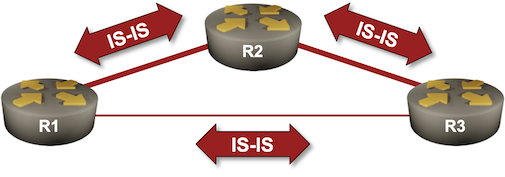

Using IS-IS Metrics
Like OSPF, IS-IS uses interface costs (called metrics) to calculate the best path toward destination IP prefixes. Unlike OSPF, the default metrics are fixes (usually set to 10) and do not reflect the interface bandwidth.
For example, in the following topology, using the default IS-IS settings, the traffic between R1 and R3 would use the direct low-speed link. We’ll fix that in this lab exercise.

Device Requirements
Use any device supported by the netlab IS-IS configuration module.
Starting the Lab
Assuming you already set up your lab infrastructure:
- Change directory to
basic/4-metric - Execute netlab up
- Log into lab devices with netlab connect
You’ll get a lab with IPv4 addresses and basic IS-IS configurations on all devices. According to the recommendations from the Configure IS-IS Routing for IPv4 lab exercise, the routers are level-2-only routers, and the links are configured as point-to-point links.
Initial Routing Tables
Check the routing tables on R1 and R3 and verify that they use the direct (low-bandwidth) link. R1 should use the first Ethernet interface to reach R2 and the second Ethernet interface to reach R3.
This is the printout you should get on FRRouting1:
r1# show ip route 10.0.0.0/24 longer-prefixes
Codes: K - kernel route, C - connected, L - local, S - static,
R - RIP, O - OSPF, I - IS-IS, B - BGP, E - EIGRP, N - NHRP,
T - Table, v - VNC, V - VNC-Direct, A - Babel, F - PBR,
f - OpenFabric, t - Table-Direct,
> - selected route, * - FIB route, q - queued, r - rejected, b - backup
t - trapped, o - offload failure
L * 10.0.0.1/32 is directly connected, lo, 00:00:58
C>* 10.0.0.1/32 is directly connected, lo, 00:00:58
I>* 10.0.0.2/32 [115/20] via 10.1.0.2, eth1, weight 1, 00:00:55
I>* 10.0.0.3/32 [115/20] via 10.1.0.10, eth2, weight 1, 00:00:55
The cost to reach 10.0.0.2/32 and 10.0.0.3/32 is 20 (when using FRRouting):
- The cost of the connection between R1 and R2 (or R1 and R3) is 10.
- R2 and R3 advertise the loopback prefixes with a cost of 10 (this detail may vary across different implementations).
You can check these details in the IS-IS topology database:
R1 LSP – note the Extended Reachability metric toward R2 and R3
r1# show isis database detail r1.00-00
Area Gandalf:
IS-IS Level-2 link-state database:
LSP ID PduLen SeqNumber Chksum Holdtime ATT/P/OL
r1.00-00 * 112 0x00000003 0xc5aa 1093 0/0/0
Protocols Supported: IPv4
Area Address: 49.0001
Hostname: r1
TE Router ID: 10.0.0.1
Router Capability: 10.0.0.1 , D:0, S:0
Extended Reachability: 0000.0000.0002.00 (Metric: 10)
Extended Reachability: 0000.0000.0003.00 (Metric: 10)
IPv4 Interface Address: 10.0.0.1
Extended IP Reachability: 10.0.0.1/32 (Metric: 10)
Extended IP Reachability: 10.1.0.0/30 (Metric: 10)
Extended IP Reachability: 10.1.0.8/30 (Metric: 10)
R2 LSP – note the Extended IP Reachability metric for 10.0.0.2/32
r1# show isis database detail r2.00-00
Area Gandalf:
IS-IS Level-2 link-state database:
LSP ID PduLen SeqNumber Chksum Holdtime ATT/P/OL
r2.00-00 112 0x00000003 0xfb73 1049 0/0/0
Protocols Supported: IPv4
Area Address: 49.0001
Hostname: r2
TE Router ID: 10.0.0.2
Router Capability: 10.0.0.2 , D:0, S:0
Extended Reachability: 0000.0000.0001.00 (Metric: 10)
Extended Reachability: 0000.0000.0003.00 (Metric: 10)
IPv4 Interface Address: 10.0.0.2
Extended IP Reachability: 10.0.0.2/32 (Metric: 10)
Extended IP Reachability: 10.1.0.0/30 (Metric: 10)
Extended IP Reachability: 10.1.0.4/30 (Metric: 10)
Changing the IS-IS Interface Metric
You can change the IS-IS interface metric with an interface configuration command similar to isis metric2. Change the metric on the R1-R3 link to 50 (you must make the change on both ends).
Verifying the Change
After the change, R1 should use the first Ethernet interface to reach R3’s loopback address. This is the printout you should get on FRRouting:
r1# show ip route 10.0.0.0/24 longer-prefixes
Codes: K - kernel route, C - connected, L - local, S - static,
R - RIP, O - OSPF, I - IS-IS, B - BGP, E - EIGRP, N - NHRP,
T - Table, v - VNC, V - VNC-Direct, A - Babel, F - PBR,
f - OpenFabric, t - Table-Direct,
> - selected route, * - FIB route, q - queued, r - rejected, b - backup
t - trapped, o - offload failure
L * 10.0.0.1/32 is directly connected, lo, 00:32:08
C>* 10.0.0.1/32 is directly connected, lo, 00:32:08
I>* 10.0.0.2/32 [115/20] via 10.1.0.2, eth1, weight 1, 00:32:05
I>* 10.0.0.3/32 [115/30] via 10.1.0.2, eth1, weight 1, 00:02:53
Narrow, Wide, and Transitional Metrics
Did you notice the Extended Reachability and Extended IP Reachability headings in the LSP printouts? Here’s the full story:
- Original IS-IS specifications had 6-bit metrics (1-63), and the end-to-end cost could not exceed 10233. Today, we call those metrics narrow metrics.
- When large ISPs started using IS-IS, they quickly discovered that those limits were ridiculous. RFC 3784 defined 24-bit metrics (we call them wide metrics). That’s what most implementations use today.
- Some networks had to transition from narrow to wide metrics, and the solution was to advertise both sets of metrics until all devices in the network understand wide metrics. Some vendors call that approach transition metrics.
Tip
I haven’t seen an IS-IS implementation that would not understand the narrow metrics, and all recent implementations support wide metrics (they’ve been around for 20 years). You have to use the transition metrics only when you have an ancient device in your network that does not understand the wide metrics.
Let’s try to reproduce the world we lived in around the turn of the millennium. FRRouting has a metric-style router configuration command. Let’s set it to narrow on R1 and see what happens to the R1 LSP:
r1# show isis database detail r1.00-00
Area Gandalf:
IS-IS Level-2 link-state database:
LSP ID PduLen SeqNumber Chksum Holdtime ATT/P/OL
r1.00-00 * 116 0x00000005 0x4857 1781 0/0/0
Protocols Supported: IPv4
Area Address: 49.0001
IS Reachability: 0000.0000.0002.00 (Metric: 10)
IS Reachability: 0000.0000.0003.00 (Metric: 50)
Hostname: r1
Router Capability: 10.0.0.1 , D:0, S:0
IP Reachability: 10.0.0.1/32 (Metric: 10)
IP Reachability: 10.1.0.0/30 (Metric: 10)
IP Reachability: 10.1.0.8/30 (Metric: 50)
IPv4 Interface Address: 10.0.0.1
As you can see, R1 replaced the Extended Reachability metric with the IS Reachability metric and the Extended IP Reachability metric with the IP Reachability metric. It also wouldn’t allow you to increase the metric on the R1-R3 link above 63.
Finally, let’s set the metric style to transition and observe the changes in R1 LSP. As expected, the LSP contains two sets of metrics for every link and IP prefix.
r1# sh isis database detail r1.00-00
Area Gandalf:
IS-IS Level-2 link-state database:
LSP ID PduLen SeqNumber Chksum Holdtime ATT/P/OL
r1.00-00 * 175 0x0000000a 0x7dab 1785 0/0/0
Protocols Supported: IPv4
Area Address: 49.0001
IS Reachability: 0000.0000.0002.00 (Metric: 10)
IS Reachability: 0000.0000.0003.00 (Metric: 50)
Hostname: r1
TE Router ID: 10.0.0.1
Router Capability: 10.0.0.1 , D:0, S:0
Extended Reachability: 0000.0000.0002.00 (Metric: 10)
Extended Reachability: 0000.0000.0003.00 (Metric: 50)
IP Reachability: 10.0.0.1/32 (Metric: 10)
IP Reachability: 10.1.0.0/30 (Metric: 10)
IP Reachability: 10.1.0.8/30 (Metric: 50)
IPv4 Interface Address: 10.0.0.1
Extended IP Reachability: 10.0.0.1/32 (Metric: 10)
Extended IP Reachability: 10.1.0.0/30 (Metric: 10)
Extended IP Reachability: 10.1.0.8/30 (Metric: 50)
And now you know the whole story behind the IS-IS metric types. I hope you’ll never see narrow or transition metric styles in a live network, and if you do (for example, due to ancient vendor defaults), consider changing that to wide.
Next: Dual-Stack (IPv4+IPv6) IS-IS Routing
Reference Information
Lab Wiring
| Origin Device | Origin Port | Destination Device | Destination Port |
|---|---|---|---|
| r1 | eth1 | r2 | eth1 |
| r2 | eth2 | r3 | eth1 |
| r1 | eth2 | r3 | eth2 |
Lab Addressing
| Node/Interface | IPv4 Address | IPv6 Address | Description |
|---|---|---|---|
| r1 | 10.0.0.1/32 | Loopback | |
| eth1 | 10.1.0.1/30 | r1 -> r2 | |
| eth2 | 10.1.0.9/30 | r1 -> r3 | |
| r2 | 10.0.0.2/32 | Loopback | |
| eth1 | 10.1.0.2/30 | r2 -> r1 | |
| eth2 | 10.1.0.5/30 | r2 -> r3 | |
| r3 | 10.0.0.3/32 | Loopback | |
| eth1 | 10.1.0.6/30 | r3 -> r2 | |
| eth2 | 10.1.0.10/30 | r3 -> r1 |
-
I’m using the show ip route longer-prefixes command to display just the loopbacks that happen to be in the 10.0.0.0/24 address space. ↩
-
IS-IS can use different metrics for L1 and L2 adjacencies. Don’t waste your time on that detail, and I hope you’ll never see a network using it outside of a CCIE lab. ↩
-
Supposedly, someone had a great idea that you could optimize the SPF algorithm if the metric is small enough to be used as an index of a reasonably sized table. ↩